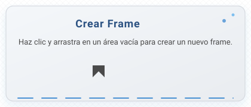
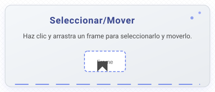
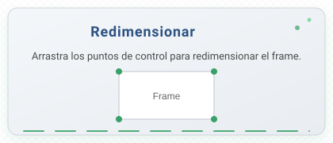
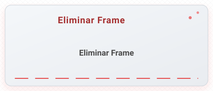
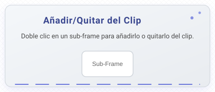
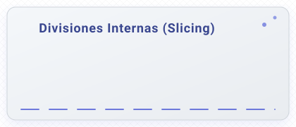

Sin título-1 @ 100%
Arrastra y suelta tu sprite sheet aquí,
o selecciona un archivo para comenzar
Procesando...

Haz clic y arrastra en un área vacía para crear un nuevo frame.

Haz clic y arrastra un frame para seleccionarlo y moverlo.

Arrastra los puntos de control para redimensionar el frame.

Selecciona un frame y presiona 'Supr' para eliminarlo.

Doble clic en un sub-frame para añadirlo o quitarlo del clip.

Un frame se convierte en "Grupo" para poder dividirlo.
- Div. Horizontal: Alt + Clic.
- Div. Vertical: Ctrl + Clic.
- Mover Línea: Arrastra una línea para ajustarla.
- Eliminar Línea: Mantén pulsada una línea y presiona 'Supr' o 'Retroceso'.
Haz clic en las casillas para añadir/quitar frames del clip activo.
Alinea los frames del clip activo usando offsets.
Ajusta los offsets de TODOS los frames para que ocupen un lienzo del mismo tamaño.
Recomendación (tamaño máximo):
Deja los campos en blanco para usar el tamaño máximo.
Arrastra cada frame verticalmente para ajustar su posición.
Arrastra el sprite para ajustar su posición y/o cambia el tamaño del lienzo de la animación.